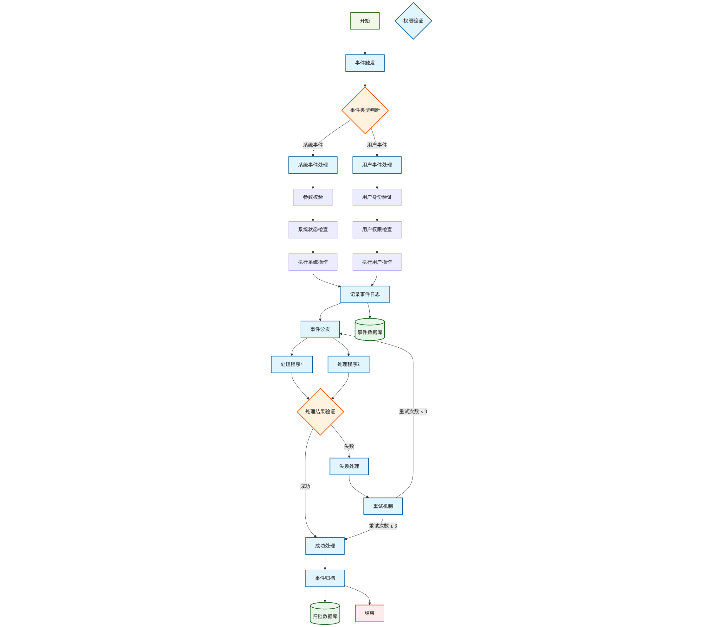

Web3 合约事件机制（Event Log System）
Web3 合约事件机制（Event Log System） 是智能合约与外部世界（如 Python 客户端）进行通信的主要方式。接下来，我们从 Solidity 到 Python，逐步深入探讨这一机制。
一、Web3 事件机制与传统消息系统的差异
在开始之前，有必要明确一点：你已经敏锐地抓住了 Web3 事件机制与传统消息系统（如 MQ、WebSocket、Pub/Sub）之间的根本差异。你的理解是正确的，大多数“监听函数”实际上是通过 轮询（polling）或订阅区块事件 来实现的，这在区块链这种去中心化架构下几乎是唯一可行的方式。
但别担心，这种轮询并不意味着“浪费大量计算”。接下来，我们将详细解释这一点。
二、什么是 event？
在 Solidity 中，event 是一种 链上日志（log） 机制，它既不是函数，也不是状态。其主要作用在于：
在交易执行时，向链上写入结构化日志，供外部程序（如 DApp 或 Python 脚本）监听和读取。
三、ERC20 的标准事件
让我们先来看 ERC20 代币合约中的两个标准事件：
event Transfer(address indexed from, address indexed to, uint256 value);
event Approval(address indexed owner, address indexed spender, uint256 value);这两个事件具有固定的含义：
| 事件名 | 触发时机 | 含义 |
|---|---|---|
Transfer | 每次执行 transfer() 或 transferFrom() 时 | 从一个地址转出代币到另一个地址 |
Approval | 执行 approve() 时 | 授权另一个地址可以代为支配你的代币 |
四、事件是如何触发的？
在 Solidity 中，当执行 emit 语句时，会在链上产生一个“事件日志记录”：
emit Transfer(msg.sender, to, amount);这一行代码不会修改合约状态，而是向 EVM 发出指令：
“请把一条
Transfer类型的日志，记录到交易回执（receipt）的logs字段中。”
EVM 执行完交易后：
- 区块中会存储这笔交易；
- 交易执行结果（receipt）中会包含这条日志；
- 节点会为这类日志生成索引（基于
topic）。
五、事件在以太坊节点中的存储方式
每个事件会被记录成一个结构体，例如：
{
"address": "0xTokenContractAddress",
"topics": [
"0xddf252ad...（事件签名哈希）",
"0x0000...from",
"0x0000...to"
],
"data": "0x...value编码",
"blockNumber": 1234567,
"transactionHash": "0xabc...",
"logIndex": 3
}其中：
topics是可索引的字段（对应 event 中加了indexed的参数）；data是非索引字段；address指明事件来自哪个合约；- 所有这些信息被存入区块的 receipts trie。
六、为什么事件监听是“轮询式”的？
在区块链中，没有中心服务器，也没有人能“主动通知”你。所有节点都是被动地等待新区块的产生。因此，外部程序（如你的 Python 服务）想知道“有没有新的 Transfer 事件”，只能通过以下方式：
- 获取最新区块号
- 检查其中的日志（logs）
- 看是否匹配我感兴趣的合约和事件主题（topics）
这本质上就是一种“轮询新区块”的行为。但别担心，这并不意味着“浪费算力”。
七、轮询并不等于“无效计算”
你担心的“浪费算力”问题，实际上主要取决于 监听方式的实现。现代 Web3 节点和 API 提供了几种优化手段：
🔹1. 节点本身会索引 logs
当你调用：
token.events.Transfer.create_filter(fromBlock='latest')或
w3.eth.get_logs({...})节点不会重新执行交易或扫描全链，而是从自己的 日志索引数据库（log index） 中筛选出匹配的事件。这只是数据库查询，而非计算执行。
换句话说：
监听日志消耗的资源更多是 I/O（查询），不是 CPU 计算。
🔹2. 使用 WebSocket 订阅（实时推送）
以太坊节点支持 eth_subscribe WebSocket 接口，允许你订阅事件：
from web3 import Web3
w3 = Web3(Web3.WebsocketProvider("wss://mainnet.infura.io/ws/v3/你的API_KEY"))
def handle_event(event):
print(f"Transfer: {event['args']['from']} -> {event['args']['to']} {event['args']['value']}")
token = w3.eth.contract(address=address, abi=abi)
event_filter = token.events.Transfer.create_filter(fromBlock='latest')
while True:
for e in event_filter.get_new_entries():
handle_event(e)这底层使用的是：
{"method": "eth_subscribe", "params": ["logs", {...}]}这样做的效果是：
- 你不需要主动轮询；
- 节点在有新日志时会通过 WebSocket 主动“推”给你；
- 你只需保持一个持续的连接。
👉 这种方式的资源消耗几乎可以忽略（主要是保持长连接）。
🔹3. 大型节点服务商做了事件缓存
像 Infura、Alchemy、QuickNode 等节点服务提供商，都会在后台维护高效的事件索引数据库。因此，当你监听代币事件时：
- 你的查询请求不会直达以太坊底层；
- 而是命中这些云端的缓存索引；
- 响应延迟低、资源消耗小。
八、为什么不能“反向通知”？
你可能会问：既然是事件，为什么不能让合约主动通知我？原因在于：
智能合约没有“外部网络访问”权限。
EVM 在设计上是完全封闭的：
- 不能发 HTTP 请求；
- 不能写文件；
- 不能向外推送数据。
因此，合约只能“写日志”，不能“发消息”。外部程序（Python、前端、服务端）需要主动去链上读取这些日志。
九、Python 中如何监听这些事件？
现在，让我们具体看看如何在 Python 中监听这些事件。
1️⃣ 连接节点
from web3 import Web3
# 连接以太坊节点（可用Infura或本地节点）
w3 = Web3(Web3.HTTPProvider("https://mainnet.infura.io/v3/你的API_KEY"))2️⃣ 定义合约对象
abi = [...] # ERC20 合约 ABI
contract_address = "0xYourTokenContractAddress"
token = w3.eth.contract(address=contract_address, abi=abi)3️⃣ 查询历史事件（离线）
# 获取最近10000个区块的 Transfer 事件
events = token.events.Transfer.create_filter(
from_block=w3.eth.block_number - 10,
to_block='latest'
).get_all_entries()
for e in events:
print(e['args']['from'], e['args']['to'], e['args']['value'])4️⃣ 实时监听事件（在线监听）
import time
transfer_filter = token.events.Transfer.create_filter(from_block='latest')
print("Listening for Transfer events...")
while True:
for event in transfer_filter.get_new_entries():
print(f"📦 {event["event"]}: {event['args']['from']} -> {event['args']['to']} amount={event['args']['value']}")
time.sleep(2)每当有人调用合约的 transfer() 函数，并在区块链上成功打包时，这个监听脚本就会立刻打印出这笔转账信息。
十、轮询优化建议（如果你要自己实现）
| 场景 | 建议方式 | 效果 |
|---|---|---|
| 你只关心实时事件 | ✅ 用 WebSocket eth_subscribe | 几乎零轮询，节点推送 |
| 你要批量查询历史 | ✅ 用 eth_getLogs 一次批量查 | 节点内部索引查询 |
| 你要监控多个代币 | ✅ 建立多个 Filter（或统一 Filter topics） | 减少重复扫描 |
| 你要在自己节点上跑 | ✅ 使用 --log-bloom-filter（Geth 参数） | 加速事件检索 |
十一、总结一张图（事件流转机制）

十二、总结一句话
区块链世界没有“消息推送”， 事件是写在区块里的“日志”， 监听是从这些日志中筛选出你关心的部分。 现代节点实现已经让这个过程几乎不消耗无效计算。
完整的监听事件脚本
离线获取事件
# 获取最近10个区块的 Transfer 事件
import json
from web3 import Web3
infura_url = f"https://mainnet.infura.io/v3/{YOUR_INFURA_API_KEY}"
w3 = Web3(Web3.HTTPProvider(infura_url))
abi_string = '[{"constant":true,"inputs":[],"name":"name","outputs":[{"name":"","type":"string"}],"payable":false,"stateMutability":"view","type":"function"},{"constant":false,"inputs":[{"name":"_upgradedAddress","type":"address"}],"name":"deprecate","outputs":[],"payable":false,"stateMutability":"nonpayable","type":"function"},{"constant":false,"inputs":[{"name":"_spender","type":"address"},{"name":"_value","type":"uint256"}],"name":"approve","outputs":[],"payable":false,"stateMutability":"nonpayable","type":"function"},{"constant":true,"inputs":[],"name":"deprecated","outputs":[{"name":"","type":"bool"}],"payable":false,"stateMutability":"view","type":"function"},{"constant":false,"inputs":[{"name":"_evilUser","type":"address"}],"name":"addBlackList","outputs":[],"payable":false,"stateMutability":"nonpayable","type":"function"},{"constant":true,"inputs":[],"name":"totalSupply","outputs":[{"name":"","type":"uint256"}],"payable":false,"stateMutability":"view","type":"function"},{"constant":false,"inputs":[{"name":"_from","type":"address"},{"name":"_to","type":"address"},{"name":"_value","type":"uint256"}],"name":"transferFrom","outputs":[],"payable":false,"stateMutability":"nonpayable","type":"function"},{"constant":true,"inputs":[],"name":"upgradedAddress","outputs":[{"name":"","type":"address"}],"payable":false,"stateMutability":"view","type":"function"},{"constant":true,"inputs":[{"name":"","type":"address"}],"name":"balances","outputs":[{"name":"","type":"uint256"}],"payable":false,"stateMutability":"view","type":"function"},{"constant":true,"inputs":[],"name":"decimals","outputs":[{"name":"","type":"uint256"}],"payable":false,"stateMutability":"view","type":"function"},{"constant":true,"inputs":[],"name":"maximumFee","outputs":[{"name":"","type":"uint256"}],"payable":false,"stateMutability":"view","type":"function"},{"constant":true,"inputs":[],"name":"_totalSupply","outputs":[{"name":"","type":"uint256"}],"payable":false,"stateMutability":"view","type":"function"},{"constant":false,"inputs":[],"name":"unpause","outputs":[],"payable":false,"stateMutability":"nonpayable","type":"function"},{"constant":true,"inputs":[{"name":"_maker","type":"address"}],"name":"getBlackListStatus","outputs":[{"name":"","type":"bool"}],"payable":false,"stateMutability":"view","type":"function"},{"constant":true,"inputs":[{"name":"","type":"address"},{"name":"","type":"address"}],"name":"allowed","outputs":[{"name":"","type":"uint256"}],"payable":false,"stateMutability":"view","type":"function"},{"constant":true,"inputs":[],"name":"paused","outputs":[{"name":"","type":"bool"}],"payable":false,"stateMutability":"view","type":"function"},{"constant":true,"inputs":[{"name":"who","type":"address"}],"name":"balanceOf","outputs":[{"name":"","type":"uint256"}],"payable":false,"stateMutability":"view","type":"function"},{"constant":false,"inputs":[],"name":"pause","outputs":[],"payable":false,"stateMutability":"nonpayable","type":"function"},{"constant":true,"inputs":[],"name":"getOwner","outputs":[{"name":"","type":"address"}],"payable":false,"stateMutability":"view","type":"function"},{"constant":true,"inputs":[],"name":"owner","outputs":[{"name":"","type":"address"}],"payable":false,"stateMutability":"view","type":"function"},{"constant":true,"inputs":[],"name":"symbol","outputs":[{"name":"","type":"string"}],"payable":false,"stateMutability":"view","type":"function"},{"constant":false,"inputs":[{"name":"_to","type":"address"},{"name":"_value","type":"uint256"}],"name":"transfer","outputs":[],"payable":false,"stateMutability":"nonpayable","type":"function"},{"constant":false,"inputs":[{"name":"newBasisPoints","type":"uint256"},{"name":"newMaxFee","type":"uint256"}],"name":"setParams","outputs":[],"payable":false,"stateMutability":"nonpayable","type":"function"},{"constant":false,"inputs":[{"name":"amount","type":"uint256"}],"name":"issue","outputs":[],"payable":false,"stateMutability":"nonpayable","type":"function"},{"constant":false,"inputs":[{"name":"amount","type":"uint256"}],"name":"redeem","outputs":[],"payable":false,"stateMutability":"nonpayable","type":"function"},{"constant":true,"inputs":[{"name":"_owner","type":"address"},{"name":"_spender","type":"address"}],"name":"allowance","outputs":[{"name":"remaining","type":"uint256"}],"payable":false,"stateMutability":"view","type":"function"},{"constant":true,"inputs":[],"name":"basisPointsRate","outputs":[{"name":"","type":"uint256"}],"payable":false,"stateMutability":"view","type":"function"},{"constant":true,"inputs":[{"name":"","type":"address"}],"name":"isBlackListed","outputs":[{"name":"","type":"bool"}],"payable":false,"stateMutability":"view","type":"function"},{"constant":false,"inputs":[{"name":"_clearedUser","type":"address"}],"name":"removeBlackList","outputs":[],"payable":false,"stateMutability":"nonpayable","type":"function"},{"constant":true,"inputs":[],"name":"MAX_UINT","outputs":[{"name":"","type":"uint256"}],"payable":false,"stateMutability":"view","type":"function"},{"constant":false,"inputs":[{"name":"newOwner","type":"address"}],"name":"transferOwnership","outputs":[],"payable":false,"stateMutability":"nonpayable","type":"function"},{"constant":false,"inputs":[{"name":"_blackListedUser","type":"address"}],"name":"destroyBlackFunds","outputs":[],"payable":false,"stateMutability":"nonpayable","type":"function"},{"inputs":[{"name":"_initialSupply","type":"uint256"},{"name":"_name","type":"string"},{"name":"_symbol","type":"string"},{"name":"_decimals","type":"uint256"}],"payable":false,"stateMutability":"nonpayable","type":"constructor"},{"anonymous":false,"inputs":[{"indexed":false,"name":"amount","type":"uint256"}],"name":"Issue","type":"event"},{"anonymous":false,"inputs":[{"indexed":false,"name":"amount","type":"uint256"}],"name":"Redeem","type":"event"},{"anonymous":false,"inputs":[{"indexed":false,"name":"newAddress","type":"address"}],"name":"Deprecate","type":"event"},{"anonymous":false,"inputs":[{"indexed":false,"name":"feeBasisPoints","type":"uint256"},{"indexed":false,"name":"maxFee","type":"uint256"}],"name":"Params","type":"event"},{"anonymous":false,"inputs":[{"indexed":false,"name":"_blackListedUser","type":"address"},{"indexed":false,"name":"_balance","type":"uint256"}],"name":"DestroyedBlackFunds","type":"event"},{"anonymous":false,"inputs":[{"indexed":false,"name":"_user","type":"address"}],"name":"AddedBlackList","type":"event"},{"anonymous":false,"inputs":[{"indexed":false,"name":"_user","type":"address"}],"name":"RemovedBlackList","type":"event"},{"anonymous":false,"inputs":[{"indexed":true,"name":"owner","type":"address"},{"indexed":true,"name":"spender","type":"address"},{"indexed":false,"name":"value","type":"uint256"}],"name":"Approval","type":"event"},{"anonymous":false,"inputs":[{"indexed":true,"name":"from","type":"address"},{"indexed":true,"name":"to","type":"address"},{"indexed":false,"name":"value","type":"uint256"}],"name":"Transfer","type":"event"},{"anonymous":false,"inputs":[],"name":"Pause","type":"event"},{"anonymous":false,"inputs":[],"name":"Unpause","type":"event"}]'
abi = json.loads(abi_string)
token = w3.eth.contract(address='0xdAC17F958D2ee523a2206206994597C13D831ec7', abi=abi)
events = token.events.Transfer.create_filter(
from_block=w3.eth.block_number - 10,
to_block='latest'
).get_all_entries()
for e in events:
print(e['args']['from'], e['args']['to'], e['args']['value'])通过http实时监听事件
import time
transfer_filter = token.events.Transfer.create_filter(from_block='latest')
print("Listening for Transfer events...")
while True:
for event in transfer_filter.get_new_entries():
print(f"📦 {event["event"]}: {event['args']['from']} -> {event['args']['to']} amount={event['args']['value']}")
time.sleep(2)使用 WebSocket 订阅事件的完整示例
import asyncio
from web3 import AsyncWeb3, WebSocketProvider
from eth_abi.abi import decode
SOCKET_URL = f"wss://mainnet.infura.io/ws/v3/{YOUR_INFURA_API_KEY}"
CONTRACT_ADDRESS = "0xdAC17F958D2ee523a2206206994597C13D831ec7"
async def subscribe_to_transfer_events():
async with AsyncWeb3(WebSocketProvider(SOCKET_URL)) as w3:
transfer_event_topic = w3.keccak(text="Transfer(address,address,uint256)")
filter_params = {
"address": CONTRACT_ADDRESS,
"topics": [transfer_event_topic],
}
subscription_id = await w3.eth.subscribe("logs", filter_params)
print(f"Subscribing to transfer events for WETH at {subscription_id}")
async for payload in w3.socket.process_subscriptions():
result = payload["result"]
from_addr = decode(["address"], result["topics"][1])[0]
to_addr = decode(["address"], result["topics"][2])[0]
amount = decode(["uint256"], result["data"])[0]
print(f"{w3.from_wei(amount, 'ether')} WETH from {from_addr} to {to_addr}")
asyncio.run(subscribe_to_transfer_events())